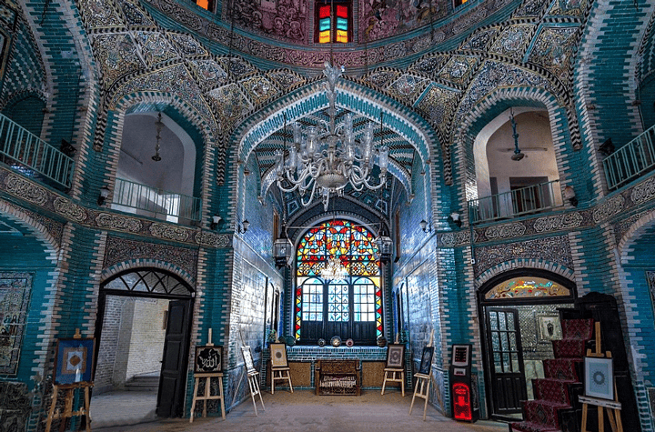
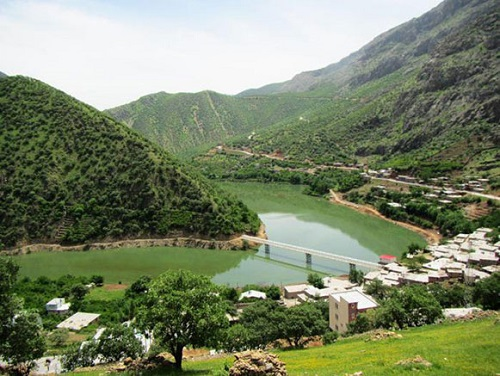

Tekye Moaven al Molk
This Qajar-era building is known for its stunning tilework and was once used for religious ceremonies. Today, it’s a key cultural landmark, blending history, religion, and art.

Dandeh Kabab
A signature dish from western Iran, Dandeh Kabab features succulent lamb ribs marinated in a tangy saffron and lemon sauce. Grilled to perfection, this flavorful kabab is a must-try for meat lovers and a popular dish at traditional Kermanshahi gatherings.

Hajij Village
Nestled in the heart of the Zagros Mountains, Hajij Village is known for its stunning natural beauty and traditional stone houses. Surrounded by lush forests and springs, it offers visitors a peaceful escape into nature.